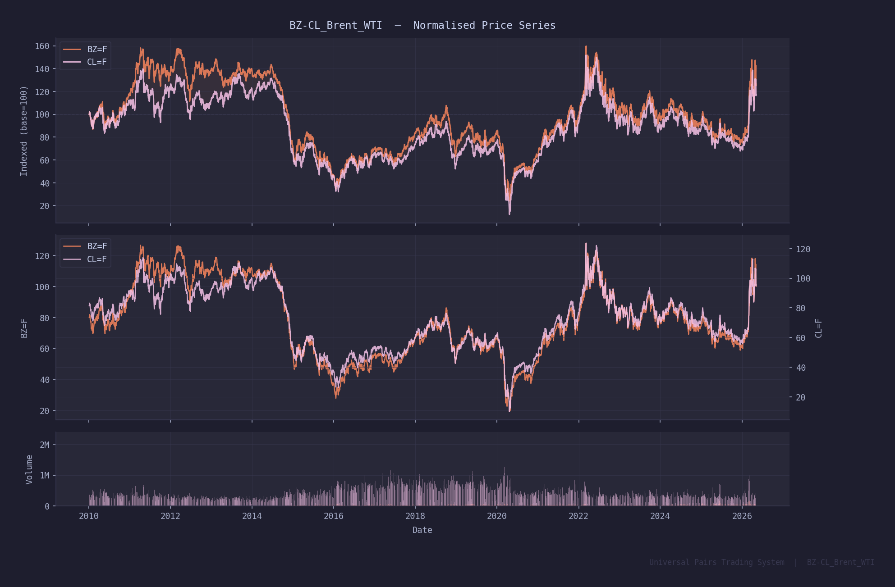
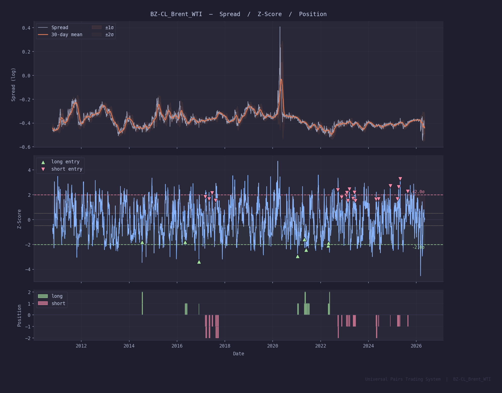
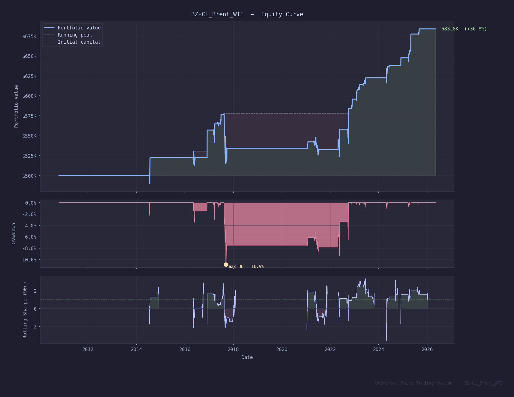
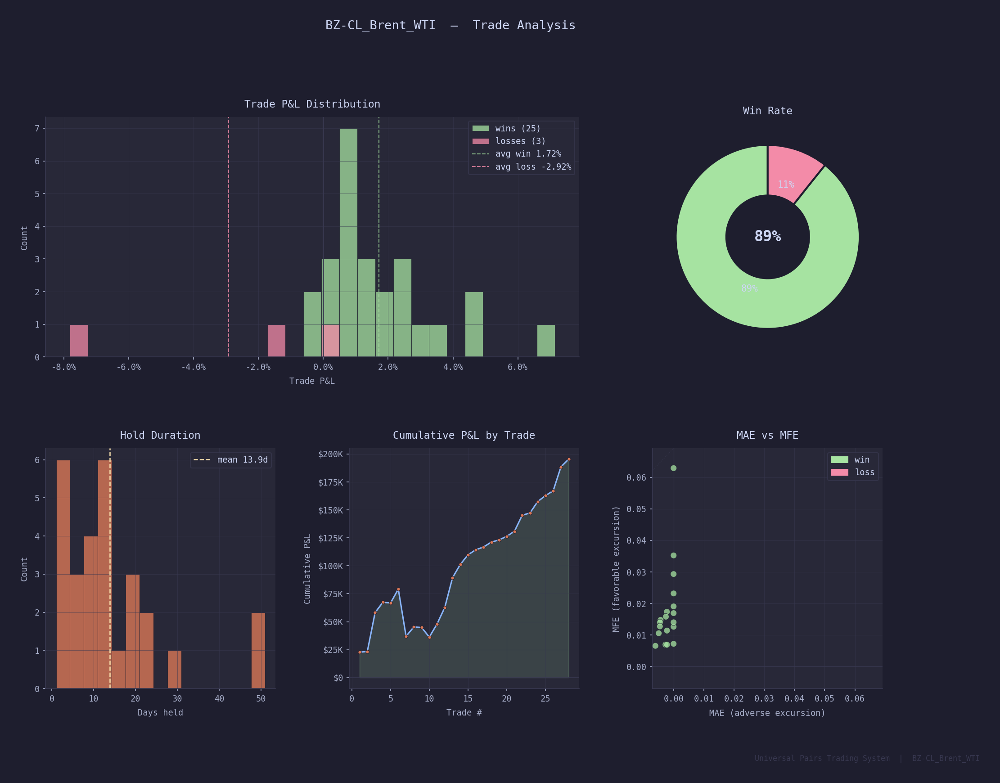
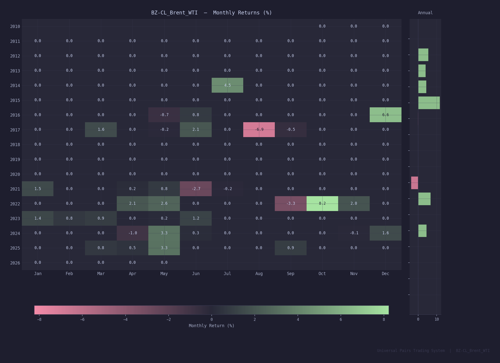
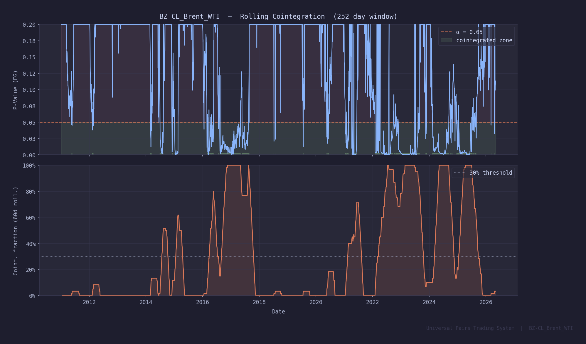

A production mean-reversion strategy built on the structural cointegration between ICE Brent (BZ=F) and NYMEX WTI (CL=F). Live-traded at AlgoGators — the only student-run quantitative investment fund in the US. Tested on 11 years of daily futures data with full transaction cost modeling.
The Universal Pairs Trading System is a production-grade algorithmic framework built to identify, test, and trade statistically cointegrated asset pairs across any asset class — energy futures, agricultural spreads, metals, and international equities. It runs a full statistical pipeline from cointegration testing through signal generation, Kelly-based position sizing, and ATR-anchored risk management.
BZ-CL — Brent vs WTI crude — is the flagship pair. Out of 15+ pairs systematically screened, it delivers the strongest risk-adjusted profile: a 14–28 day half-life, confirmed cointegration at p = 0.0025, and 39% rolling cointegration frequency across 252-day windows.
Brent Crude (ICE, BZ=F) and WTI Crude (NYMEX, CL=F) are the two dominant global oil benchmarks, but they reflect physically distinct markets. Brent prices seaborne North Sea crude — the international reference. WTI prices US inland crude at Cushing, Oklahoma — the domestic reference. Their prices are structurally linked through crude quality differentials, trans-Atlantic shipping costs, pipeline capacity, and refinery demand.
This structural economic linkage creates a persistent statistical equilibrium. When geopolitical shocks, inventory imbalances, pipeline outages, or sanctions widen the Brent-WTI spread beyond its equilibrium range, arbitrage forces — refiners switching crude grades, tanker routing changes, export/import flows — work to close the gap. This is the fundamental driver of mean reversion.
The log spread S_t = log(BZ_t) − β·log(CL_t) is stationary with a half-life of 14–28 days. This means the spread reverts to its historical mean in roughly 2–4 weeks on average — an actionable timeframe for systematic signal generation.
Pairs trading operates on the principle of cointegration — a stronger condition than correlation. Two price series are cointegrated if a linear combination of them is stationary (mean-reverting), even if each series individually is non-stationary (I(1)). This guarantees a long-run equilibrium relationship and provides the theoretical justification for mean-reversion signals.
Each trading day the system runs the full pipeline from raw price data to a binary position signal. Multiple filters are applied sequentially to reduce false positives while preserving genuine mean-reversion opportunities. The cointegration gate alone eliminates 61% of trading days, keeping the system inactive until structural conditions hold.
Tested on daily futures data from 2014–2025 (11 years) with 5 bps per-side commission and 2 bps average slippage modeled. $500,000 initial capital. Zero look-ahead bias — all statistics computed on expanding in-sample windows only.






All 28 completed trades from the backtest period. 25 wins, 3 losses. The three losses are concentrated in 2016–2021 — the post-WCS-widening period when Brent-WTI dynamics were most disrupted by US shale export growth and Permian basin bottlenecks. The system has been profitable on every trade since late 2021.
Win/loss is determined by spread P&L direction before friction costs. Portfolio return % includes all transaction costs and Kelly position sizing.
| # | Entry | Exit | Dir | Days | Entry Z | Portfolio Rtn | Result |
|---|---|---|---|---|---|---|---|
| 1 | Jul 2014 | Jul 2014 | Long | 9 | −1.81 | +4.54% | Win |
| 2 | May 2016 | Jun 2016 | Long | 30 | −1.80 | +0.15% | Loss |
| 3 | Dec 2016 | Dec 2016 | Long | 1 | −3.38 | +6.64% | Win |
| 4 | Mar 2017 | Mar 2017 | Short | 22 | +1.84 | +1.65% | Win |
| 5 | May 2017 | May 2017 | Short | 19 | +1.66 | −0.10% | Win |
| 6 | Jun 2017 | Jun 2017 | Short | 10 | +2.13 | +2.19% | Win |
| 7 | Aug 2017 | Sep 2017 | Short | 48 | +1.54 | −7.32% | Loss |
| 8 | Jan 2021 | Jan 2021 | Long | 15 | −2.94 | +1.56% | Win |
| 9 | Apr 2021 | May 2021 | Long | 20 | −1.59 | −0.09% | Win |
| 10 | May 2021 | Jul 2021 | Long | 51 | −2.42 | −1.58% | Loss |
| 11 | Apr 2022 | Apr 2022 | Long | 1 | −2.10 | +2.19% | Win |
| 12 | May 2022 | May 2022 | Long | 21 | −1.87 | +2.72% | Win |
| 13 | Sep 2022 | Oct 2022 | Short | 12 | +2.37 | +4.77% | Win |
| 14 | Nov 2022 | Nov 2022 | Short | 11 | +1.80 | +2.03% | Win |
| 15 | Jan 2023 | Jan 2023 | Short | 4 | +1.94 | +1.45% | Win |
| 16 | Feb 2023 | Feb 2023 | Short | 10 | +2.16 | +0.74% | Win |
| 17 | Feb 2023 | Mar 2023 | Short | 8 | +1.50 | +0.42% | Win |
| 18 | Mar 2023 | Mar 2023 | Short | 7 | +2.44 | +0.71% | Win |
| 19 | May 2023 | May 2023 | Short | 12 | +1.67 | +0.32% | Win |
| 20 | May 2023 | Jun 2023 | Short | 7 | +2.18 | +0.52% | Win |
| 21 | Jun 2023 | Jun 2023 | Short | 6 | +1.51 | +0.74% | Win |
| 22 | Apr 2024 | May 2024 | Short | 19 | +1.64 | +2.30% | Win |
| 23 | Jun 2024 | Jun 2024 | Short | 3 | +1.66 | +0.32% | Win |
| 24 | Nov 2024 | Dec 2024 | Short | 3 | +2.70 | +1.60% | Win |
| 25 | Mar 2025 | Mar 2025 | Short | 13 | +1.66 | +0.82% | Win |
| 26 | Apr 2025 | Apr 2025 | Short | 13 | +2.63 | +0.65% | Win |
| 27 | Apr 2025 | May 2025 | Short | 1 | +3.27 | +3.27% | Win |
| 28 | Aug 2025 | Sep 2025 | Short | 12 | +2.26 | +1.02% | Win |
The system was systematically applied to 15+ pairs across energy, agriculture, metals, and international equities. BZ-CL was selected as the flagship on the basis of confirmed cointegration, actionable half-life, and best risk-adjusted performance.
| Pair | Class | Coint | P-Value | Half-Life | Win Rate | Sharpe | Trades |
|---|---|---|---|---|---|---|---|
| BZ-CL ★ Flagship | Energy | Yes | 0.0025 | 14.5d | 83.3% | — | 18 |
| CL-RB Crack Spread | Energy | Yes | 0.0010 | 18.8d | 77.8% | 0.05 | 18 |
| CL-HO Crack Spread | Energy | Yes | 0.0154 | 29.0d | 66.7% | −0.72 | 9 |
| NG-HO Heat Spread | Energy | Yes | 0.0468 | 65.8d | 80.0% | −0.31 | 5 |
| ZC-ZS Corn / Soy | Agri | Yes | 0.0025 | 65.2d | 50.0% | −0.69 | 2 |
| ZW-ZC Wheat / Corn | Agri | Yes | 0.0002 | 48.0d | 70.0% | −0.32 | 10 |
| ZS-ZM Soy / Meal | Agri | Yes | 0.0100 | 94.1d | 100% | −1.01 | 5 |
| GC-SI Gold / Silver | Metals | No | 0.172 | 91.4d | 100% | −3.06 | 1 |
| EWA-EWC Aus / Can | Equities | No | — | 194d | 75.0% | 0.13 | 20 |
| SPY-IVV S&P Arb | Equities | No | — | 30.3d | 99.4% | −1.77 | 167 |
★ BZ-CL selected as flagship on confirmed cointegration + actionable half-life + best risk-adjusted profile. Non-cointegrated pairs are tracked but not live-traded as primary strategies. Data from multi-pair backtest run 20260511.